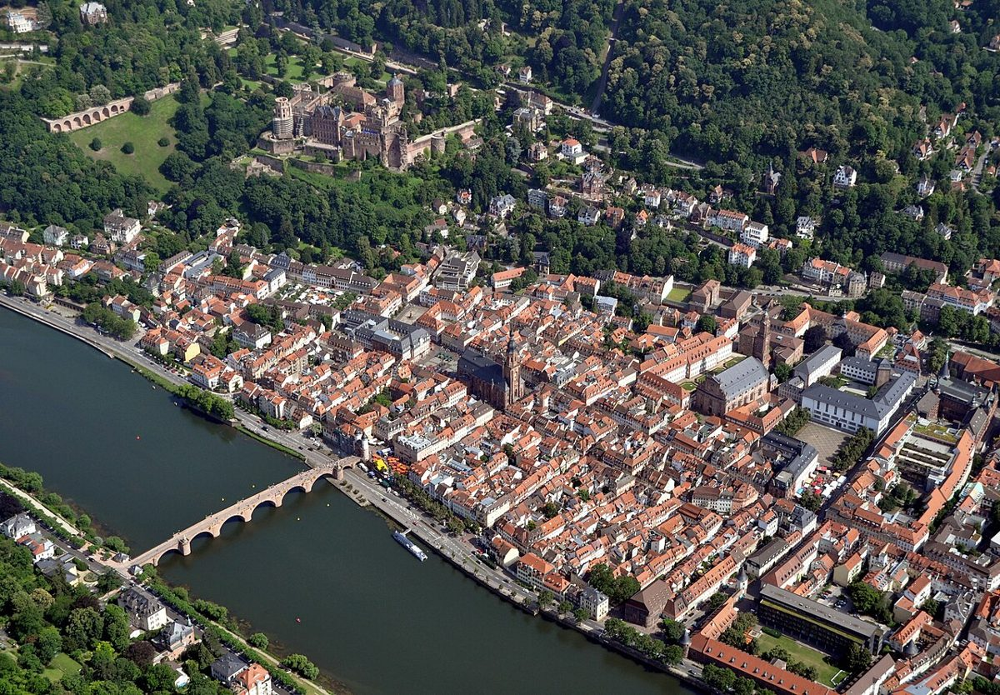

Heidelberg Altstadt: Ein charmantes Reiseziel am Neckar

Die Heidelberger Altstadt ist ein wahres Juwel im Herzen Deutschlands. Mit ihrer malerischen Lage am Neckar, den historischen Gebäuden und der lebendigen Atmosphäre zieht sie jährlich tausende Besucher an. Hier findest du alles, was du für einen unvergesslichen Besuch in dieser zauberhaften Stadt wissen musst.
Anreise nach Heidelberg
Heidelberg ist gut mit öffentlichen Verkehrsmitteln zu erreichen. Mit dem Zug kommst du bequem zum Hauptbahnhof, von wo aus die Altstadt nur wenige Minuten entfernt ist. Auch mit dem Auto ist Heidelberg gut erreichbar, allerdings solltest du dich auf begrenzte Parkmöglichkeiten einstellen. Besonders praktisch ist es, außerhalb der Altstadt zu parken und den kurzen Weg zu Fuß oder mit öffentlichen Verkehrsmitteln zurückzulegen.
Beste Reisezeit
Die beste Zeit für einen Besuch der Heidelberger Altstadt ist im Frühling oder Herbst. Im Frühling erwacht die Stadt zu neuem Leben, und die Parks und Gärten sind in voller Blüte. Der Herbst bietet dagegen ein beeindruckendes Farbenspiel der Bäume entlang des Neckars. Im Sommer kann es zwar warm und etwas voller werden, aber die zahlreichen Straßencafés und Biergärten laden zum Verweilen ein. Im Winter verleiht der Weihnachtsmarkt der Altstadt eine besondere Atmosphäre.
Highlights der Altstadt
Die Heidelberger Altstadt hat zahlreiche Sehenswürdigkeiten zu bieten. Hier sind einige Highlights, die du nicht verpassen solltest:
- Heidelberger Schloss: Das wohl bekannteste Wahrzeichen der Stadt thront majestätisch über der Altstadt. Ein Spaziergang durch die Ruinen des Schlosses bietet nicht nur einen Einblick in die Geschichte, sondern auch einen atemberaubenden Blick auf die Stadt und den Neckar.
- Alte Brücke: Die Karl-Theodor-Brücke, besser bekannt als Alte Brücke, verbindet die Altstadt mit dem gegenüberliegenden Ufer. Ein Spaziergang über die Brücke ist ein Muss, besonders bei Sonnenuntergang.
- Hauptstraße: Die Hauptstraße ist eine der längsten Fußgängerzonen Europas und gesäumt von Geschäften, Cafés und historischen Gebäuden. Hier kannst du gemütlich bummeln und das Flair der Altstadt genießen.
- Heiliggeistkirche: Diese beeindruckende Kirche im Herzen der Altstadt ist ein weiteres historisches Highlight. Lass dir die Gelegenheit nicht entgehen, die Kirche von innen zu besichtigen und ihre eindrucksvolle Architektur zu bewundern.
Kulinarische Genüsse
Die Heidelberger Altstadt bietet auch kulinarisch einiges. Hier findest du traditionelle deutsche Küche ebenso wie internationale Spezialitäten. Einige Empfehlungen:
- Heidelberger Schnitzel: Probier unbedingt ein klassisches Schnitzel in einem der vielen gemütlichen Restaurants. Es gibt zahlreiche Varianten, von klassisch bis kreativ.
- Studentenlokale: Heidelberg ist eine Universitätsstadt, und das merkst du auch an den vielen studentengeprägten Lokalen. Hier findest du oft günstige und leckere Speisen sowie eine lebendige Atmosphäre.
- Cafés und Biergärten: Für eine Pause zwischendurch laden die zahlreichen Cafés und Biergärten ein. Genieß ein Stück Kuchen oder ein kühles Bier und lass die Seele baumeln.
Fazit
Die Heidelberger Altstadt ist ein Ort voller Geschichte, Charme und Leben. Egal, ob du die historischen Sehenswürdigkeiten erkunden, gemütlich durch die Gassen schlendern oder die lokale Küche genießen möchtest – hier findet jeder etwas, das ihm gefällt. Ein Besuch in dieser zauberhaften Stadt ist ein Erlebnis, das du nicht so schnell vergessen wirst.
Haiktec
- 7 Erfolgsstrategien für kleine Restaurants und Cafés: Mehr Gäste, mehr Umsatz
- Schwarzwald-Reisekosten-Tracker & Aktivitäten-Planer für internationale Gäste
- Saarland & Mosel Entdecker: 7 Einfache Schritte zu Verborgenen Juwelen und Lokalen Geheimtipps
Text mit KI erstellt und automatisch geprueft.